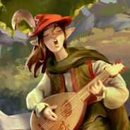

About me

Welcome to my site, I am chaussettes. This site exists as a personal folder and display case for all my drawings. I was unhappy with all available art portfolio website options and was essentially forced to create my own. All portfolio sites either have some sort of usability paywall in place that makes them not feasible and DeviantArt, the place I was posting to before, decided it was a fantastic idea to start displaying explicitly pornographic ads on the sidebar next to everyone's pieces if you weren't using an adblocker. I won't expose people to that kind of stuff if I can help it, so a week of learning basic HTML and CSS led to the creation of this site.Here on the site you can view everything that I deem finished enough to put up. I do a lot of portraits and a few landscapes sometimes, often inspired by my favorite games like Dark Souls, Dwarf Fortress, Caves of Qud and some ASCII traditional roguelikes where you are encouraged to use your imagination to paint a picture of a landscape or event.
I use the free and open-source software Krita to create everything you see here. I have no complaints with it and have never really bothered to learn or use anything else. I draw with a mouse and do not own a drawing tablet. Some people find this unbelievable but I personally don't think drawing with a mouse is any more difficult than learning to play something like an FPS shooter with one. It just takes some time to adjust is all.
I do not take commissions. Drawing has been something I've always done since before elementary school and it is purely a personal hobby of mine. I think trying to monetize it would ruin some of the magic of it for me and I am also not really confident in my ability to provide something of quality to someone who is paying me money for it. I think the pressure of having to provide a service would diminish my creative ability and turn it into something that wouldn't be fun for me to do anymore.
Please enjoy your time here and thank you for looking at my stuff.